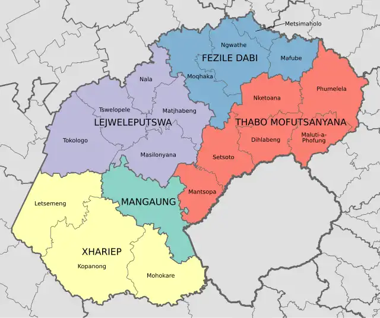

Provinces that will be covered
I am travelling across all 9 provinces of South Africa one step at a time to raise awareness about mental health, break the silence around depression and suicide, and bring hope to communities in need. Through my journey, I will stop in key towns and cities to engage in real conversations, connect with schools, churches, and community leaders, and remind every South African that healing is possible. This is more than a journey, it's a movement for change.
Limpopo
- Polokwane (Capital city)
- Burgersfort
- Ohrigstand
- Via R37
Mpumalanga
- Graskop (Mpumalanga)
- Bushbuckridge
- Mbombela/Nelspruit
- Via R538 and R40
- eMalahleni
- Via R104
- Bronkhorstspruit
- Via R25
Gauteng
- Johannesburg (Braamfontein)
- Museum of illusions Johannesburg
- Sandton Mall Tour
- Via M9 Join Via M74
- 123 Pretoria Road
- Mall of Africa Tour
- Midrand (Route Via 101)
- Centurion Lifestyle Centre Tour
- Route Via M19 Join M18
- Pretoria Central
- Via Route R514
North West
- Brits
- Rustenburg
- Via Route R104
- Mahikeng/Capital City(Via Route N4)
- Via Route N18
Northern Cape
- Vryburg(Via N18)
- Kuruman (Via N14)
- Route R372 and R371
- Kimberley

Free State
- Route R64 Join R710
- Welkom
- Route R30
- Bloemfontein
- N1 Join N5
- R34 Join R618
KwaZulu-Natal
- Newcastle
- Nongoma
- Richards Bay
- Nkandla
- Via King Dinizulu Hwy/R66
- Pietermaritzburg
- Via R103
- Durban
- Route R56 Join N2
Eastern Cape
- Mthatha
- East London (Via N2)
- Route R72
- Gqeberha (Port Elizabeth)
- Route R102
Western Cape
- Plettenberg Bay
- George
- Bredasdorp
- Route N2
- Cape Town (Final Stop)